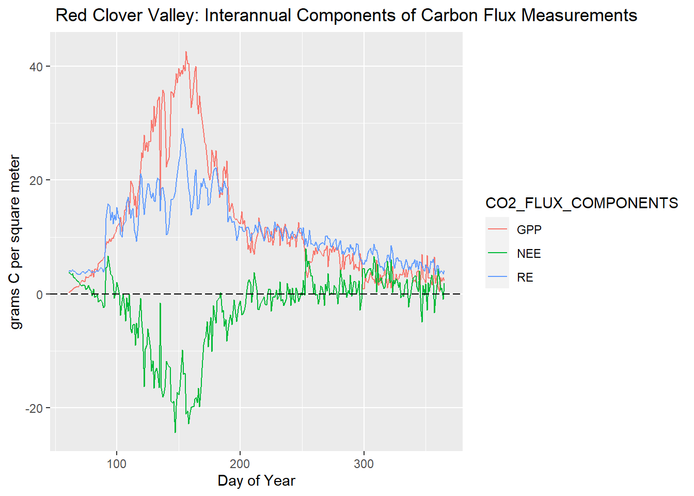
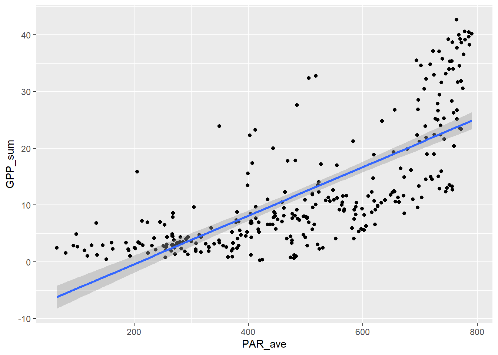
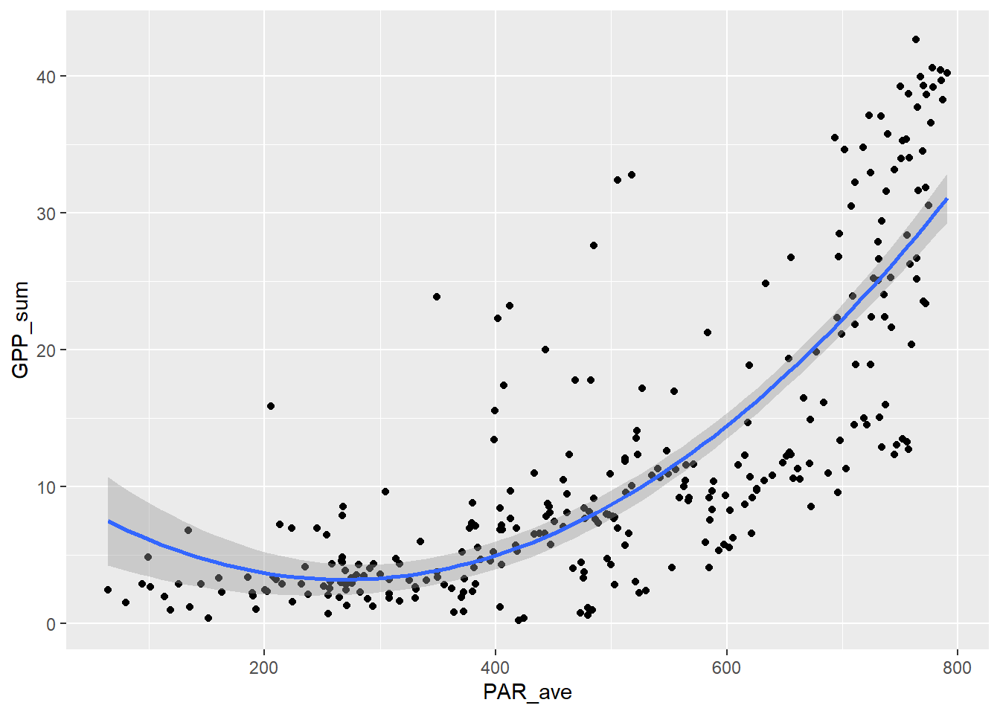
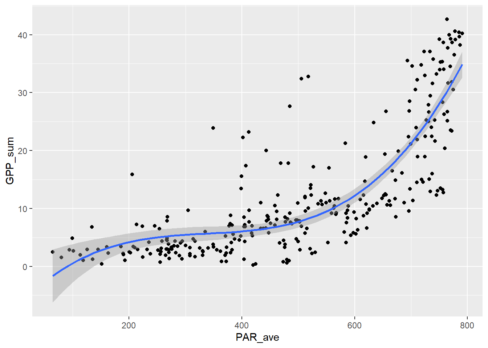
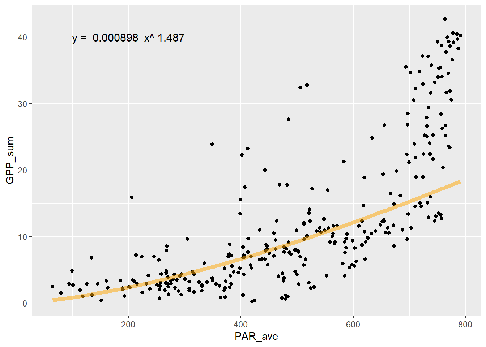
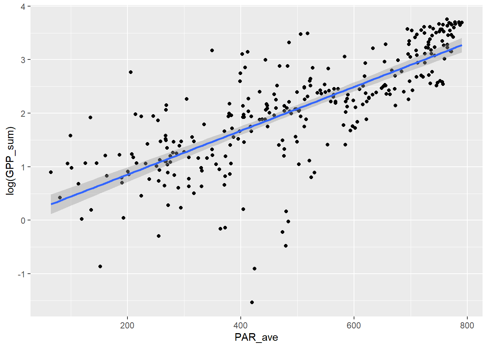
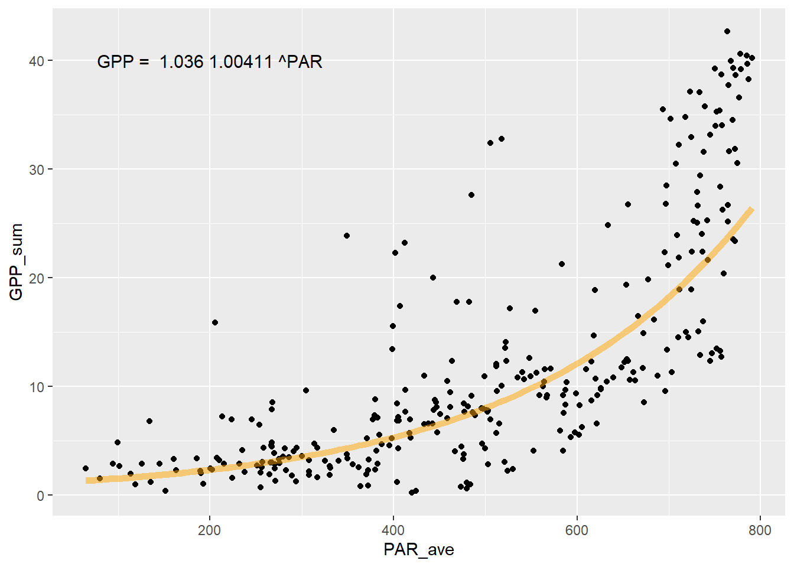
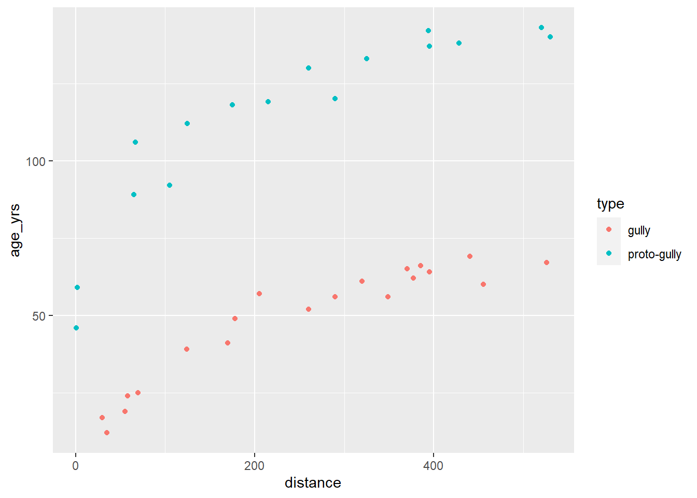
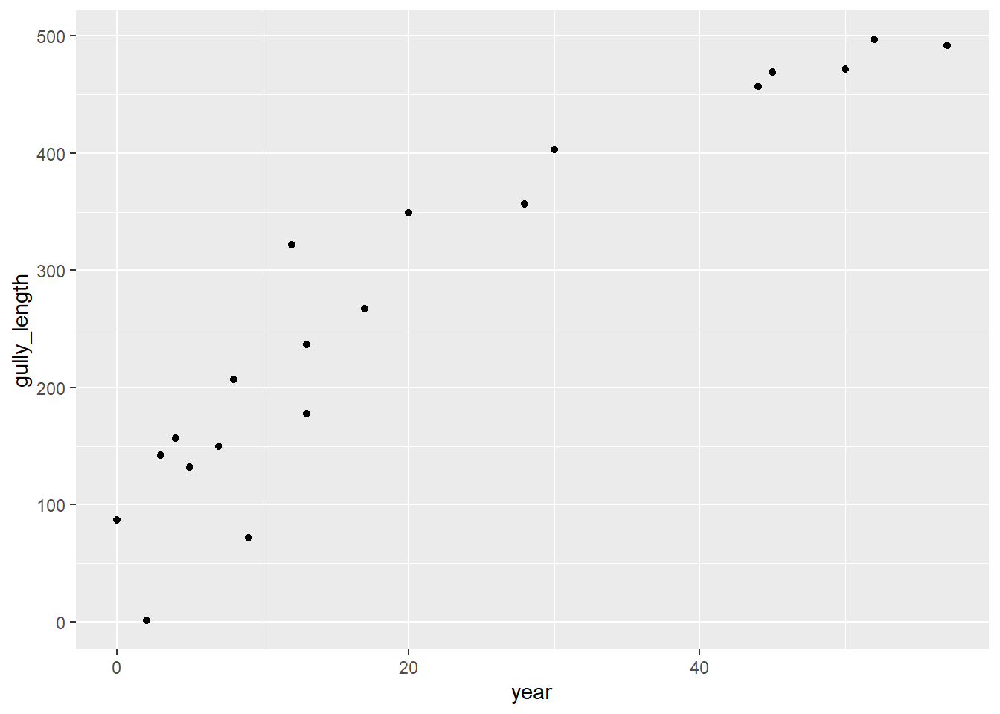
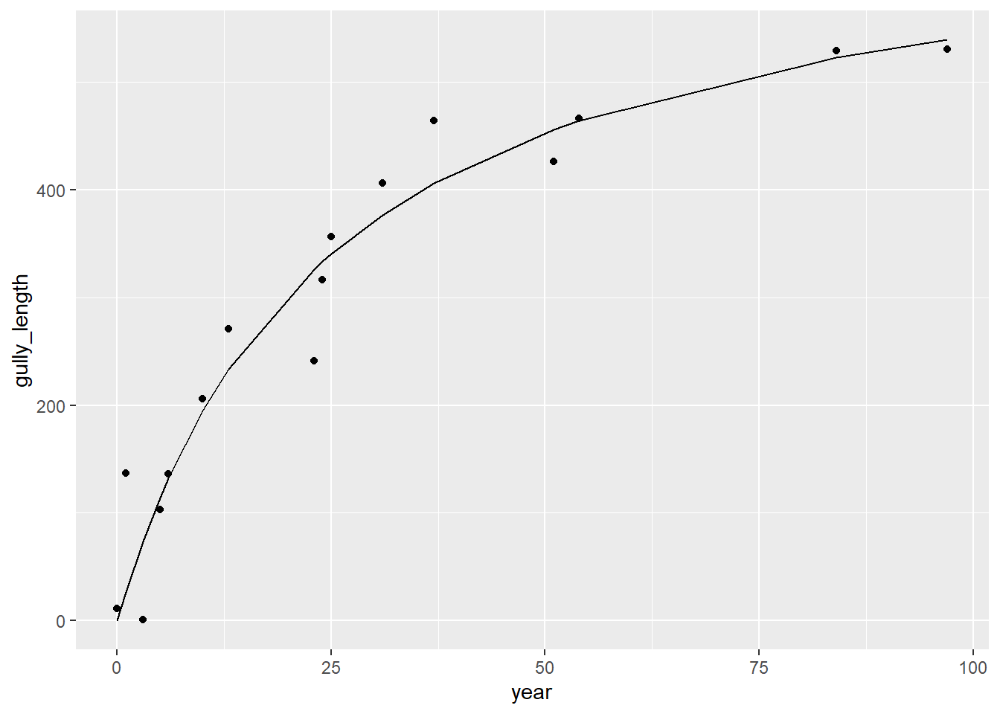

9 Curve fitting
Typical curve fitting approaches are variations on a linear model, using lm with simple or transformed (e.g. log()) data, but there are other methods such as:
glm– generalized linear modelspoly– for polynomialsnls– for nonlinear models
In this chapter, we’ll explore a bit of polynomial models and nonlinear models; glm is covered in the modeling chapter https://bookdown.org/igisc/EnvDataSci/modeling.html#generalized-linear-model-glm of the book. This section will explore various curve fitting methods. We’ll read in data as needed. There’s not a lot of interpretation, as this is basically a sandbox for now.
9.1 Carbon flux data from Red Clover Valley
Data are from Andrew Oliphant, used in his bioclimatology class at SFSU.
First create a function to convert the first two rows into individual variables. We won’t include the units, so we’ll comment out this line from the function we’ve used before.
read_excel2 <- function(xl){
vnames <- read_excel(xl, n_max=0) |> names()
# vunits <- read_excel(xl, n_max=0, skip=1) |> names()
read_excel(xl, skip=2, col_names=vnames)
}In reading the data, we’ll remove the zero GPP_sum values.
Then we’ll build a figure, modified from a method used by Mason Kealy in GEOG 604, using ggplot to visualize change of NEE, GPP and RE over the period of data.
Carbon_Flux |>
select(Date:PAR_ave) |>
mutate(NEE = round(NEE_sum, digits = 3),
GPP = round(GPP_sum, digits = 3),
RE = round(RE_sum, digits = 3)) |>
pivot_longer(cols = c("NEE", "RE", "GPP"), names_to = "CO2_FLUX_COMPONENTS", values_to ="value") |>
filter(GPP_sum != 0, !is.na(PAR_ave)) |>
ggplot(aes(x = Date, y= value, color = CO2_FLUX_COMPONENTS))+
geom_line()+
geom_hline(yintercept = 0, linetype = "longdash", color = "black")+
ggtitle(" Red Clover Valley: Interannual Components of Carbon Flux Measurements") +
xlab("Day of Year") +
ylab("grams C per square meter")# +
FIGURE 9.1: Figure 1: Components of Carbon Flux measurements collected in 30 minute intervals in 2021 and added into ‘sum daily value’ , from flux tower in Red Clover Valley,California. Components included NEE (Net Ecosystem Exchange), RE (Respiration Efficiency), GPP (Gross Primary Productivity) all measured in \(g C m^-2\) and are plotted against an annual time scale with days as the unit of measure.
9.2 Polynomial models
Fitting to various polynomial orders (powers) is easy with the poly function. We’ll try orders 1 through 3 PAR_ave~poly(GPP_sum), summarizing the results of a model …
9.2.0.1 poly 1
##
## Call:
## lm(formula = GPP_sum ~ poly(PAR_ave, ord, raw = T), data = Carbon_Flux)
##
## Residuals:
## Min 1Q Median 3Q Max
## -11.944 -4.931 -1.131 4.120 19.711
##
## Coefficients:
## Estimate Std. Error t value Pr(>|t|)
## (Intercept) -8.979814 1.162887 -7.722 1.72e-13 ***
## poly(PAR_ave, ord, raw = T) 0.042818 0.002184 19.603 < 2e-16 ***
## ---
## Signif. codes: 0 '***' 0.001 '**' 0.01 '*' 0.05 '.' 0.1 ' ' 1
##
## Residual standard error: 7.258 on 300 degrees of freedom
## (1 observation deleted due to missingness)
## Multiple R-squared: 0.5616, Adjusted R-squared: 0.5601
## F-statistic: 384.3 on 1 and 300 DF, p-value: < 2.2e-16… and displaying the curve using stat_smooth() in ggplot2:
ggplot(Carbon_Flux, aes(PAR_ave, GPP_sum)) + geom_point() +
stat_smooth(method=lm, formula=y~poly(x,ord,raw=T))
9.2.0.2 poly 2
The second order polynomial (also called a quadratic relationship) can create a parabola, so using part of that can create a steepening curve.
##
## Call:
## lm(formula = GPP_sum ~ poly(PAR_ave, ord, raw = T), data = Carbon_Flux)
##
## Residuals:
## Min 1Q Median 3Q Max
## -14.9170 -3.5191 -0.4922 2.4739 23.4111
##
## Coefficients:
## Estimate Std. Error t value Pr(>|t|)
## (Intercept) 1.062e+01 2.205e+00 4.815 2.34e-06 ***
## poly(PAR_ave, ord, raw = T)1 -5.500e-02 9.970e-03 -5.517 7.49e-08 ***
## poly(PAR_ave, ord, raw = T)2 1.023e-04 1.024e-05 9.994 < 2e-16 ***
## ---
## Signif. codes: 0 '***' 0.001 '**' 0.01 '*' 0.05 '.' 0.1 ' ' 1
##
## Residual standard error: 6.294 on 299 degrees of freedom
## (1 observation deleted due to missingness)
## Multiple R-squared: 0.6714, Adjusted R-squared: 0.6692
## F-statistic: 305.4 on 2 and 299 DF, p-value: < 2.2e-16ggplot(Carbon_Flux, aes(PAR_ave, GPP_sum)) + geom_point() +
stat_smooth(method=lm, formula=y~poly(x,ord,raw=T))
9.2.0.3 poly 3
##
## Call:
## lm(formula = GPP_sum ~ poly(PAR_ave, ord, raw = T), data = Carbon_Flux)
##
## Residuals:
## Min 1Q Median 3Q Max
## -16.4635 -3.3443 -0.8198 2.3635 24.5018
##
## Coefficients:
## Estimate Std. Error t value Pr(>|t|)
## (Intercept) -7.290e+00 3.959e+00 -1.841 0.066598 .
## poly(PAR_ave, ord, raw = T)1 1.048e-01 3.138e-02 3.340 0.000946 ***
## poly(PAR_ave, ord, raw = T)2 -2.949e-04 7.497e-05 -3.934 0.000104 ***
## poly(PAR_ave, ord, raw = T)3 2.908e-07 5.440e-08 5.345 1.8e-07 ***
## ---
## Signif. codes: 0 '***' 0.001 '**' 0.01 '*' 0.05 '.' 0.1 ' ' 1
##
## Residual standard error: 6.023 on 298 degrees of freedom
## (1 observation deleted due to missingness)
## Multiple R-squared: 0.7001, Adjusted R-squared: 0.6971
## F-statistic: 231.9 on 3 and 298 DF, p-value: < 2.2e-16ggplot(Carbon_Flux, aes(PAR_ave, GPP_sum)) + geom_point() +
stat_smooth(method=lm, formula=y~poly(x,ord,raw=T))
Well, these all worked pretty well, with significant p values and \(r^2\) of 70% for the 3rd order polynomial, but the patterns are difficult to interpret past the first order (a simple linear model anyway), and it allows parts of the curve to do odd things, like decrease in predicted value before increasing in the 2nd order polynomial, not surprising since it models a parabola.
So we might want to try some methods that don’t work this way, like a power law model or an exponential model.
9.2.1 Power law model
A power law model looks like this:
\[ y=ax^p \] This can be log transformed… \[ log(y)=log(ax^p) \] … and converted using logarithm reformatting rules to be the form of a simple linear model, with \(log(a)\) the intercept and \(p\) the slope:
\[ log(y)=log(a)+p(log(x)) \] So by simply taking the log transform of each of the variables, we can model the relationship:
\[ GPP=aPAR^p \] using the log transformed variables to derive the intercept \(log(a)\) and thus \(a=exp(log(a))\) and slope \(p\).
\[ log(GPP)=log(a)+p(log(PAR)) \]
Note that this works because
log()in R is a natural log, that is to the base \(e\).
##
## Call:
## lm(formula = log(GPP_sum) ~ log(PAR_ave), data = Carbon_Flux)
##
## Residuals:
## Min 1Q Median 3Q Max
## -3.5030 -0.2983 0.0036 0.4421 1.8629
##
## Coefficients:
## Estimate Std. Error t value Pr(>|t|)
## (Intercept) -7.01503 0.52675 -13.32 <2e-16 ***
## log(PAR_ave) 1.48693 0.08593 17.30 <2e-16 ***
## ---
## Signif. codes: 0 '***' 0.001 '**' 0.01 '*' 0.05 '.' 0.1 ' ' 1
##
## Residual standard error: 0.7215 on 300 degrees of freedom
## (1 observation deleted due to missingness)
## Multiple R-squared: 0.4995, Adjusted R-squared: 0.4978
## F-statistic: 299.4 on 1 and 300 DF, p-value: < 2.2e-16 Now to plot without the log transformed axes, we’ll need to create the curve with the model, using the coefficients.
Now to plot without the log transformed axes, we’ll need to create the curve with the model, using the coefficients.
coeff = exp(powerModel$coefficients[1])
power = powerModel$coefficients[2]
fit_func <- function(x) coeff*x^power
fluxPlot <- ggplot(Carbon_Flux) +
geom_point(aes(x=PAR_ave,y=GPP_sum))
fluxPlot <- fluxPlot +
stat_function(fun=fit_func, color="orange",lwd=2, alpha=0.5)fit_eq = paste("y = ", round(coeff,6), " x^", round(power,3))
fluxPlot <- fluxPlot +
annotate("text",x=200,y=40,label=fit_eq,size=4)
fluxPlot
Hmmm… not a great fit graphically, with an \(r^2\) of 50%. We can do better. Let’s try an exponential model.
9.2.2 Exponential model
An exponential model can take many forms, but can commonly increase in response much more dramatically, as appears appropriate for the look of the scatter plot. The formula looks a bit like the power law, but the explanatory variable \(x\) is the exponent instead of the coefficient \(b\) (which was \(p\) in the power law):
\[ y=ab^x \] This can be log transformed… \[ log(y)=log(ab^x) \] … and converted using logarithm reformatting rules to be the form of a simple linear model, with \(log(a)\) the intercept and \(log(b)\) the slope:
\[ log(y)=log(a)+x(log(b)) \]
So what can we do with this? In this case, we don’t take the \(log(PAR)\) but just use PAR (in our case PAR_ave).
##
## Call:
## lm(formula = log(GPP_sum) ~ PAR_ave, data = Carbon_Flux)
##
## Residuals:
## Min 1Q Median 3Q Max
## -3.2928 -0.3094 0.0594 0.3838 1.8885
##
## Coefficients:
## Estimate Std. Error t value Pr(>|t|)
## (Intercept) 0.0353590 0.1041148 0.34 0.734
## PAR_ave 0.0040974 0.0001956 20.95 <2e-16 ***
## ---
## Signif. codes: 0 '***' 0.001 '**' 0.01 '*' 0.05 '.' 0.1 ' ' 1
##
## Residual standard error: 0.6498 on 300 degrees of freedom
## (1 observation deleted due to missingness)
## Multiple R-squared: 0.594, Adjusted R-squared: 0.5927
## F-statistic: 439 on 1 and 300 DF, p-value: < 2.2e-16
Now plot without the log transformed axes, we’ll need to create the curve with the model, using the coefficients.coeff = exp(expModel$coefficients[1])
slope = exp(expModel$coefficients[2])
fit_func <- function(x) coeff*slope^x
fluxPlot <- ggplot(Carbon_Flux) +
geom_point(aes(x=PAR_ave,y=GPP_sum))
fluxPlot <- fluxPlot +
stat_function(fun=fit_func, color="orange",lwd=2, alpha=0.5)
fit_eq = paste("GPP = ", round(coeff,4), round(slope,5), "^PAR")
fluxPlot <- fluxPlot +
annotate("text",x=200,y=40,label=fit_eq,size=4)
fluxPlot
This is a much better fit, as can be seen graphically above, and with an \(r^2\) of 59%, as opposed to the 50% of the power model. It’s not as high as we got with the 3rd order polynomial, but an exponential relationship is more easily interpreted as there are many natural phenomena that exhibit it.9.3 Nonlinear models
Sometimes the options we’ve looked at so far don’t really match the relationship we’re seeing, especially if things are nonlinear (the log-transformed models are still basically linear), and we may want to explore other models. One approach is the nonlinear least squares approach provided by the r function nls. It also works with linear relationships, and can be thought of as providing a model that uses a least-squares assessment similar to lm, but lets you provide the formula.
A good source to read more about this is https://datascienceplus.com/first-steps-with-non-linear-regression-in-r/. The method we’ll borrow from is from https://www.datacamp.com/tutorial/introduction-to-non-linear-model-and-insights-using-r.
We might try this with an asymptotic model, which might be modeled with the Michaelis-Menten equation predicting a value \(S\), where \(V_{max}\) is the maximum value, \(K_m\) is the independent variable. It’s used in enzyme kinetics in biochemistry where the predicted value is a reaction rate and the independent variable is an enzyme concentration, but it’s one way of modeling an asymptotic relationship. This type of equation describes a rectangular hyperbola.
\[ v=\frac{V_{max}S}{K_m+S} \]
So we’ll use the equation to try to model gully growth from a limited supply of available slope to erode. This data comes from Graf WL (1977). The rate law in fluvial geomorphology. Am. J. Sci 277: 178-191. After using these data to develop a gully growth model, we’ll use a rate-law model similar to the one used by Graf to create a gully hillslope erosion model. Both approaches model response to a disequilibrium produced by an event (such as intensive grazing or off-road vehicle use).
First, let’s look at the original data, which comes from measured quantities, from a rural gully and a more urban proto-gully:
- distance: from the head of the gully
- age_yrs: ages of trees that initiated in the lower part of the gully when sufficient soil had developed; that location moves headward as the gully grows

They both exhibit an asymptotic form in the original data, but we’ll need to turn things around to produce independent (time) and dependent (gully growth) variables, so we’ll add a couple of variables that will help us with that. The existing data has distance from the headcut, which is the most recent part of the gully, so we’ll add a gully_length variable (gullies erode headward) that starts at zero just below (arbitrarily 1 m past) the oldest tree, assuming that is somewhere near the initiation point; and since the variable is interval, not ratio, it doesn’t matter where zero is as long as we’re progressing forward in time. The age of trees can also be converted into year starting at the oldest age.
gully <- gullyGrowth |> filter(type=="gully") |>
mutate(year=max(age_yrs)-age_yrs, gully_length=max(distance)-distance+1)
ggplot(data=gully, aes(x=year,y=gully_length)) + geom_point()
Here’s where we apply the nls function, and define that Michaelis-Menten equation. Note that the nls function uses iteration from initial starting values, which we’ll provide with the start parameter, a list of initial Vmax and K values: we’ll get the Vmax as the maximum of the gully length values, and (the default) 1 for the rate.
gullyMod <- nls(gully_length~(Vmax)*year/(K+year), data=gully,
start=list(Vmax=max(gully$gully_length),K=1))
summary(gullyMod)##
## Formula: gully_length ~ (Vmax) * year/(K + year)
##
## Parameters:
## Estimate Std. Error t value Pr(>|t|)
## Vmax 722.004 86.801 8.318 1.4e-07 ***
## K 25.485 6.611 3.855 0.00116 **
## ---
## Signif. codes: 0 '***' 0.001 '**' 0.01 '*' 0.05 '.' 0.1 ' ' 1
##
## Residual standard error: 51.67 on 18 degrees of freedom
##
## Number of iterations to convergence: 7
## Achieved convergence tolerance: 1.707e-06ggplot(data=gully, aes(x=year)) +
geom_point(aes(y=gully_length)) +
geom_line(data=gully, aes(x=year, y=predict(gullyMod,gully)))  Now we’ll do the same for the proto-gullies.
Now we’ll do the same for the proto-gullies.
proto <- gullyGrowth |> filter(type=="proto-gully") |>
mutate(year=max(age_yrs)-age_yrs, gully_length=max(distance)-distance+1)
protoMod <- nls(gully_length~(Vmax)*year/(K+year), data=proto,
start=list(Vmax=max(proto$gully_length),K=1))
summary(protoMod)##
## Formula: gully_length ~ (Vmax) * year/(K + year)
##
## Parameters:
## Estimate Std. Error t value Pr(>|t|)
## Vmax 676.036 65.699 10.290 6.55e-08 ***
## K 24.657 6.035 4.086 0.00111 **
## ---
## Signif. codes: 0 '***' 0.001 '**' 0.01 '*' 0.05 '.' 0.1 ' ' 1
##
## Residual standard error: 48.08 on 14 degrees of freedom
##
## Number of iterations to convergence: 6
## Achieved convergence tolerance: 2.585e-06ggplot(data=proto, aes(x=year)) +
geom_point(aes(y=gully_length)) +
geom_line(data=proto, aes(x=year, y=predict(protoMod,proto))) 
So we can see significant gully growth models with both gully and proto-gully data.
9.3.1 Using the rate law to model hillslope erosion
As Graf (1977) did, we can apply a rate law to model how much of the original hillslope remains as it is being eroded. The rate law equation is:
\[ A_t=A_0e^{-bt} \] where:
- \(A_t\) is the amount of material changed, in this case the length of the gully from the headcut, the original measured
distanceat a given time - \(A_0\) is the potential equilibrium length of the gully
- \(b\) is the rate constant, to be derived as a coefficient. Note that the coefficient should be negative (-b), since we’re modeling hillslope erosion
- \(t\) is the amount of time elapsed
The rate law equation can be log-transformed to produce a simple linear equation
\[ log(A_t)=log(A_0)-bt \]
So this is able to be processed with lm, and we’ll use year instead of age, but stick with distance since this at least works.
##
## Call:
## lm(formula = log(distance) ~ year, data = gully)
##
## Residuals:
## Min 1Q Median 3Q Max
## -0.36700 -0.11212 0.01619 0.12583 0.31123
##
## Coefficients:
## Estimate Std. Error t value Pr(>|t|)
## (Intercept) 6.236224 0.062241 100.19 < 2e-16 ***
## year -0.047462 0.002235 -21.24 3.4e-14 ***
## ---
## Signif. codes: 0 '***' 0.001 '**' 0.01 '*' 0.05 '.' 0.1 ' ' 1
##
## Residual standard error: 0.1834 on 18 degrees of freedom
## Multiple R-squared: 0.9616, Adjusted R-squared: 0.9595
## F-statistic: 451.1 on 1 and 18 DF, p-value: 3.401e-14A0 = exp(rateGully$coefficients[1])
rate = rateGully$coefficients[2]
fit_func <- function(x) A0*exp(rate*x)
ggplot(data=gully, aes(x=year)) +
geom_point(aes(y=distance)) +
stat_function(fun=fit_func, color="orange",lwd=2, alpha=0.5) So this seems to fit the erosion of the gully pretty well. We can also derive the half life of the erosion of hillslope length as:
So this seems to fit the erosion of the gully pretty well. We can also derive the half life of the erosion of hillslope length as:
\[ T=log(2)/{-b} \]
paste0("The coefficient A0 is ", round(A0,1), ", the rate (b) is ",round(rate,3)," and the half life T is ", round(log(2)/-rate, 2), " years.")## [1] "The coefficient A0 is 510.9, the rate (b) is -0.047 and the half life T is 14.6 years."